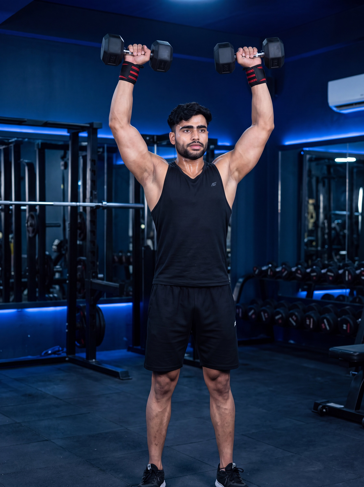

Primary Muscle
Deltoids
Build Stronger Shoulders, Improve Stability & Develop Balanced Upper-Body Strength
The Dumbbell Shoulder Press is a compound upper-body exercise that primarily targets the anterior and lateral deltoids while also engaging the triceps, upper chest, trapezius, and core stabilizers. Using dumbbells allows each arm to move independently, helping improve shoulder stability, correct muscular imbalances, increase pressing strength, and build balanced shoulder development.

Deltoids
Dumbbells
Beginner
Compound
Discover which muscles are primarily responsible for the Dumbbell Shoulder Press and which supporting muscles assist in pressing the dumbbells overhead, improving shoulder stability, and maintaining balanced upper-body strength throughout each repetition.
Front and Side Shoulders
Back of Upper Arm
Upper Chest
Upper Back & Core
Discover how the Dumbbell Shoulder Press helps build stronger shoulders, improve muscular balance, increase overhead pressing strength, and enhance shoulder stability through a controlled compound movement.
Since each arm works independently, the Dumbbell Shoulder Press helps develop balanced shoulder size and strength while reducing side-to-side muscular imbalances.
Strengthens the muscles responsible for pressing weight overhead, improving athletic performance, functional strength, and other upper-body pressing exercises.
Dumbbells require each shoulder to stabilize the weight independently, helping improve joint stability, coordination, and movement control.
Unlike a barbell, dumbbells allow your arms to move more naturally, helping many lifters find a comfortable pressing path based on their individual shoulder mobility.
This compound exercise recruits the deltoids, triceps, upper chest, trapezius, and core muscles to build complete upper-body strength and coordination.
The Dumbbell Shoulder Press makes it easy to progressively increase resistance while maintaining proper technique, making it an excellent exercise for long-term shoulder strength and muscle growth.
Follow these step-by-step instructions to perform the Dumbbell Shoulder Press with proper posture, controlled movement, and excellent shoulder stability for maximum strength and muscle development.
Hold a dumbbell in each hand using a neutral or slightly pronated grip. Raise the dumbbells to shoulder level with your elbows positioned slightly in front of your body.
Keep your wrists straight and the dumbbells directly above your forearms for better control.
Stand with your feet about shoulder-width apart, brace your core, squeeze your glutes, and maintain a neutral spine. Keep your chest lifted without overextending your lower back.
A strong core creates a stable base and helps you press the dumbbells more efficiently.
Press both dumbbells upward until your arms are fully extended overhead. Keep the movement smooth and allow the dumbbells to travel in a natural path without forcing them together.
Press straight up while keeping your shoulders down and your elbows underneath the dumbbells.
Finish with your arms fully extended and the dumbbells positioned directly above your shoulders. Maintain a stable posture without shrugging or leaning backward.
Keep your shoulders stable and avoid locking your elbows aggressively at the top of the movement.
Slowly lower the dumbbells back to shoulder level while maintaining full control and keeping your core engaged. Repeat for the desired number of repetitions.
Control the lowering phase for two to three seconds to maximize muscle activation and improve shoulder stability.
Avoid these common technique mistakes to improve shoulder activation, increase pressing strength, and perform the Dumbbell Shoulder Press safely and effectively.
Leaning backward excessively while pressing the dumbbells overhead places unnecessary stress on the lower back and reduces shoulder engagement during the movement.
Brace your core, squeeze your glutes, and maintain a neutral spine throughout the exercise. Reduce the weight if you cannot keep proper posture.
Allowing one arm to press faster or higher than the other creates muscular imbalances and reduces overall movement efficiency and shoulder stability.
Press both dumbbells together at the same speed and keep your elbows moving symmetrically throughout the entire repetition.
Choosing dumbbells that are too heavy often causes poor technique, reduced range of motion, and unnecessary stress on the shoulders, wrists, and lower back.
Select a weight that allows you to complete every repetition with full control, proper range of motion, and balanced arm movement.
Letting the dumbbells fall rapidly reduces time under tension, decreases muscle activation, and makes it harder to maintain shoulder stability during the lowering phase.
Lower the dumbbells slowly and under control until they return to shoulder level while maintaining constant muscle tension throughout the movement.
Apply these practical coaching cues to improve your Dumbbell Shoulder Press technique, increase shoulder stability, build balanced strength, and perform every repetition with greater control and confidence.
Move both dumbbells at the same speed throughout the exercise. Balanced pressing improves shoulder symmetry, coordination, and overall movement quality.
Keep your elbows and wrists moving together so both arms finish each repetition at the same time.
A braced core provides a stable foundation for pressing heavier dumbbells while helping maintain proper posture and protecting the lower back.
Tighten your abs and glutes before every repetition and maintain that tension until the dumbbells return to shoulder level.
Lift the dumbbells with control and lower them slowly to maximize muscle activation, improve shoulder stability, and maintain proper technique.
The lowering phase is just as important as the press. Aim for a controlled two- to three-second descent.
Allow each arm to move independently through a comfortable pressing path that matches your shoulder mobility instead of forcing the dumbbells together overhead.
Focus on smooth, natural movement rather than touching the dumbbells together at the top of every repetition.
Progress from mastering proper dumbbell pressing mechanics to building greater shoulder strength, improving stability, and advancing to more challenging overhead pressing variations while maintaining excellent technique.
Begin with light dumbbells to learn the correct grip, shoulder positioning, pressing path, and core bracing before increasing the training load.
Proper setup, neutral spine, shoulder stability, balanced arm movement, controlled tempo, and full range of motion.
Perform controlled repetitions with moderate weights while ensuring both arms press evenly and your shoulders remain stable throughout every repetition.
Symmetrical arm movement, controlled tempo, shoulder stability, full range of motion, and consistent technique.
Once your technique is consistent, gradually increase the dumbbell weight while maintaining proper form, controlled repetitions, and balanced overhead pressing.
Progressive overload, balanced strength, shoulder control, full lockout, and maintaining excellent movement quality.
After mastering the Dumbbell Shoulder Press, progress to advanced variations such as the Arnold Press, Single-Arm Dumbbell Shoulder Press, Push Press, or Standing Alternating Dumbbell Press to continue building strength and shoulder stability.
Continued shoulder development, unilateral strength, improved stability, progressive overload, and selecting advanced variations that match your training goals.
Find clear answers to common questions about the Dumbbell Shoulder Press, including proper technique, muscles worked, shoulder stability, training frequency, and progression.
The Dumbbell Shoulder Press primarily targets the anterior and lateral deltoids while also engaging the triceps, upper pectoralis major, upper trapezius, serratus anterior, and core stabilizers to support the overhead pressing movement.
Both exercises are effective. The Dumbbell Shoulder Press allows each arm to move independently, helping improve shoulder stability, balance, and muscular symmetry, while the Barbell Shoulder Press generally allows heavier loads for maximum strength development.
No. The dumbbells do not need to touch. Press them overhead through a comfortable, natural path while keeping constant tension on the shoulders and maintaining full control throughout the movement.
Yes. Beginners can safely perform the Dumbbell Shoulder Press by starting with light dumbbells, learning proper technique, maintaining a neutral spine, and gradually increasing resistance as strength and confidence improve.
Most people benefit from performing the Dumbbell Shoulder Press one to two times per week as part of a balanced upper-body or shoulder training program, allowing enough recovery between sessions.
The ideal number of sets and repetitions depends on your training goals and experience. For general muscle growth and strength, performing 2–4 working sets of 6–12 controlled repetitions with proper technique is a common and effective recommendation.
Explore other shoulder exercises that complement the Dumbbell Shoulder Press and help you build stronger deltoids, improve overhead strength, develop balanced shoulder muscles, and enhance overall upper-body performance.


Continue building stronger, more balanced shoulders with step-by-step exercise guides covering proper technique, muscles worked, common mistakes, expert coaching tips, and progressive training strategies.